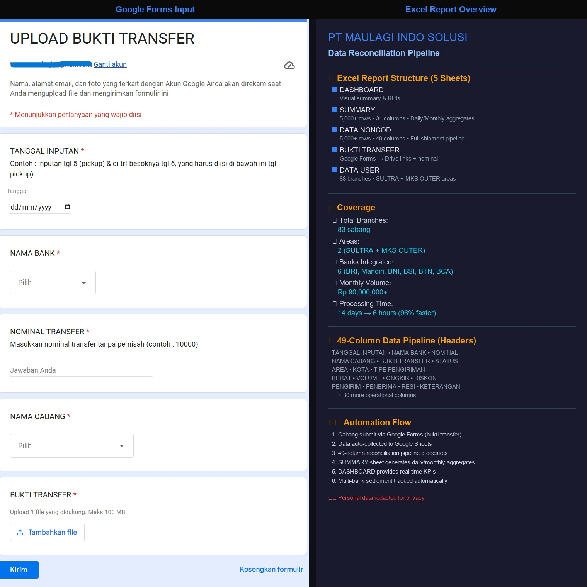

Muhammad Tharmizy Tahir, S.T.
"As long as there is data that needs to be tracked, I can automate it. Because I have proven it in the field."
A B O U T
Most businesses I have worked with had the same problem: too much manual work, too little visibility. I fix that by building automation systems that actually get used in the field, not just on paper.
I have built and deployed workflow automation for real operations. A payment receipt system using Telegram and AI/OCR that eliminated manual data entry for field agents. A reconciliation system handling data from 80+ logistics branches daily. A POS system for a retail shop. A full Android app for a laundry business. These are not side projects — they ran in production.
Beyond the technical side, I have led field operations teams of 40+ people across 5 cities in Sulawesi (Makassar, Manado, Palu, Kendari, Gorontalo). I do not just build systems. I understand what breaks in the field, what people actually need, and how to design automation that survives real-world conditions.
Most automation engineers have never managed a team. Most operations managers cannot build automation. I do both. That combination is rare and it is what I bring to every engagement.
C O R E S K I L L S
Automation & Systems
- Workflow automation — n8n, Telegram Bot, WhatsApp
- API & webhook integration
- AI/OCR for document data extraction
- Google Sheets automation & pipelines
- Android app development (Kotlin, Jetpack Compose)
Operations & Data
- Microsoft Excel advanced — SUMIFS, LET, FILTER, XLOOKUP
- Data reconciliation — multi-branch cost vs payment matching
- Performance monitoring & dashboard design
- Multi-location team leadership (40+ people, 5 cities)
- Power BI — reporting & visualization
P R O J E C T P O R T F O L I O
1. Payment Receipt Automation
Collection teams received dozens of payment receipts every day via Telegram. Agents had to manually read each photo and type the data into a spreadsheet — one by one. Hours of work, high error rate, and zero consistency across the team.
Built an end-to-end automation workflow using n8n. When a customer sends a payment receipt photo via Telegram, the system extracts all relevant data using AI/OCR, validates it, saves it automatically to Google Sheets, and sends a confirmation back to the sender. If the photo is unclear, the system requests a resend automatically.
Manual data entry dropped to zero. 95% AI/OCR accuracy achieved. 80% reduction in manual processing time — from hours to under 10 seconds per receipt. Handles 500+ transactions daily. Zero transcription errors across the entire collection team.

2. Field Team Monitoring System
Managing 50+ field agents spread across 5 cities — Makassar, Manado, Palu, Kendari, and Gorontalo — with no unified system meant spending most of each day just collecting and consolidating data before any analysis could begin.
Built a comprehensive Excel-based monitoring system from scratch. The system aggregated performance data from all agents across all cities — ACH Target, Recovery Rate, Caring Visit, Digital Caring, Gap Analysis, and Collected vs Paid. Automated reporting replaced manual daily compilation.
Data from 50+ agents across 5 cities aggregated automatically. Team leadership time shifted from data collection to actual decision-making and agent coaching. 42% improvement in task completion. Reduced coordination overhead by 8 hours per day.
3. Expedition Collection & Reconciliation System
A logistics business with 80+ branches across 2 operational areas (Sulawesi Tenggara & Makassar Outer) had no standardized way to collect payment data. Reconciling shipping costs against actual transfers from multiple banks (BRI, BCA, ShopeePay, GoPay, BNI, DANA) was done manually — took up to 14 days and discrepancies went undetected.
End-to-end data pipeline: branch operators submit transfer proof via Google Forms → auto-stored in Google Drive + Google Sheets with timestamps → fed into a 49-column Excel reconciliation engine that matches shipping costs against actual bank transfers across all branches and flags discrepancies instantly. Daily, monthly, and per-bank summaries generated automatically.
Reduced monthly reconciliation cycle time by over 90% — from 14 days to 6 hours. 99% duplicate elimination. Handles Rp90M+ monthly transaction volume. Full financial visibility — management sees branch-level accuracy daily without manual effort.

4. Quality Laundry — Android Operations App
Small-to-medium laundry businesses operating pickup and delivery services had no unified system to coordinate customers, couriers, and admin. Order status was tracked manually, communication was scattered, and there was no visibility into operations.
Designed and built a full Android application connecting three roles: customer, courier, and admin. The system handles the complete order lifecycle — customer creates a pickup order, courier navigates to the location and handles pickup, admin processes the laundry and inputs weight and payment, courier delivers the finished order. Includes real-time chat, push notifications, map-based pickup location, reporting dashboard, and data export.
A complete operational system for laundry businesses that replaces manual coordination with an automated, role-based workflow. Built end-to-end — from mobile UI to backend API to real-time database. Demonstrates ability to architect and ship full production systems independently.

5. POS & Inventory System — Nie Buket
No digital system for managing sales, stock, and receipts. Transactions done manually with zero record keeping or reporting.
Built a full-stack Progressive Web App with Express.js + MongoDB Atlas backend. Features include product & stock management, transaction history, thermal receipt printing via Bluetooth, and real-time low-stock alerts. Deployed live on Vercel.
Fully digitized operations. Every sale is recorded, stock is tracked automatically, and receipts print instantly via Bluetooth.

W H Y W O R K W I T H M E
I understand the problem from inside
I have worked in operations. I know what breaks in the field. The systems I build solve real problems, not theoretical ones.
Everything has been proven in production
All systems in this portfolio ran in real operations. Not demo environments, not practice projects. Real data, real teams, real scale.
Cross-industry adaptability
Telecoms, logistics, and now app development. The same principles apply. The same approach works. I adapt quickly.
Results over complexity
The goal is never an impressive-looking system. The goal is giving time back to the team. Simple, reliable, and actually used.